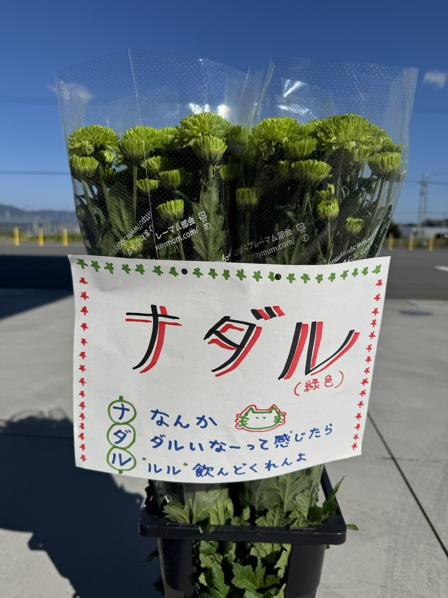

見た目の特徴
深みのあるグリーンが、落ち着いたアレンジや差し色に向きます（写真はサンプル）。
緑
未登録：出荷時期

Variety / 品種
特徴・出荷時期などの情報は順次追加します。
Overview / 概要
情報が未登録の項目は、順次追加していきます。
深みのあるグリーンが、落ち着いたアレンジや差し色に向きます（写真はサンプル）。
| 花色 | 緑 |
|---|---|
| 出荷時期 | 未登録（要問い合わせ） |
| 規格 | 未登録 |
| 日持ち目安 | 未登録 |
※このページはテンプレートです。項目は増やせます。